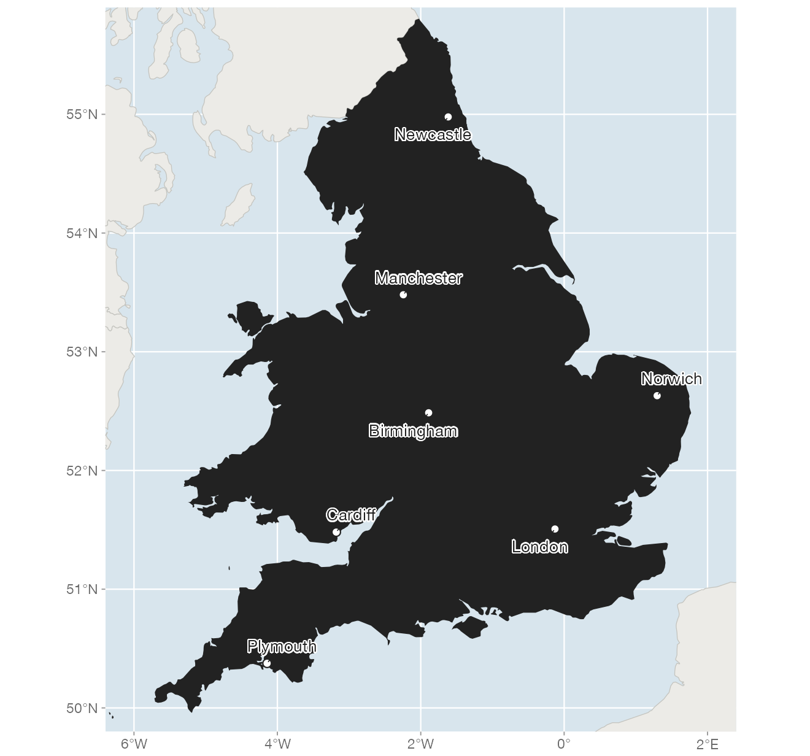
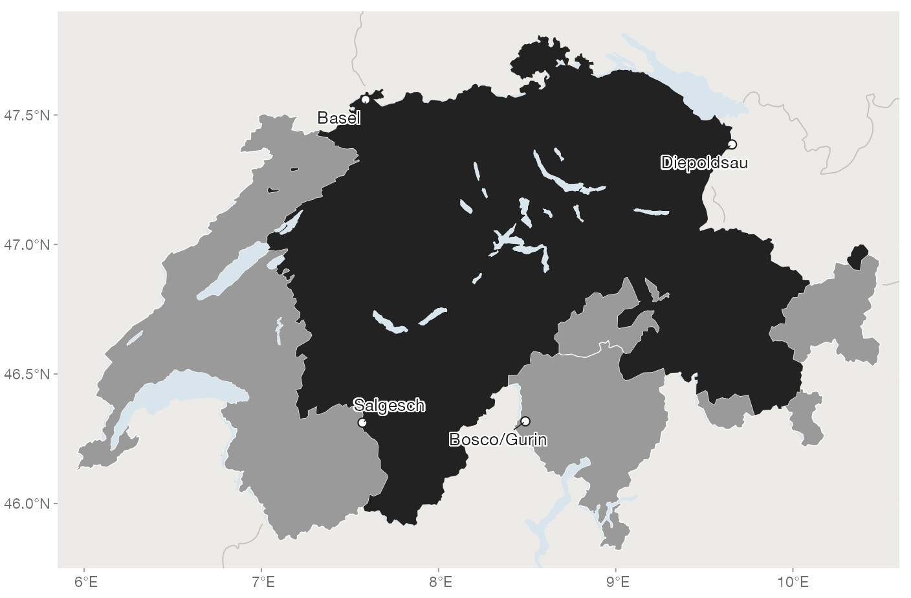
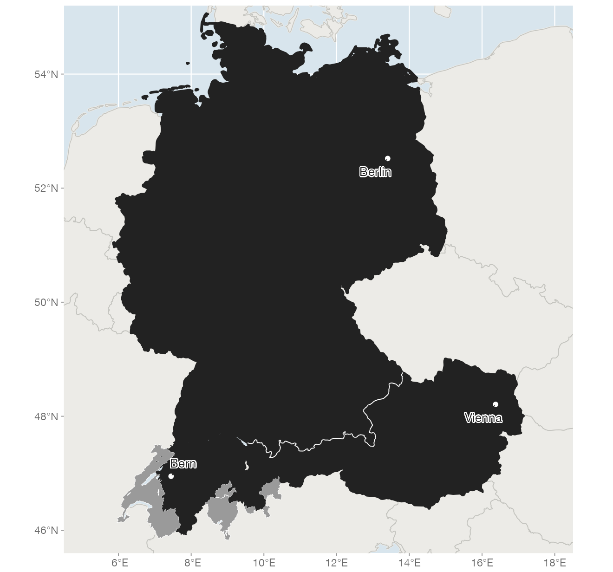
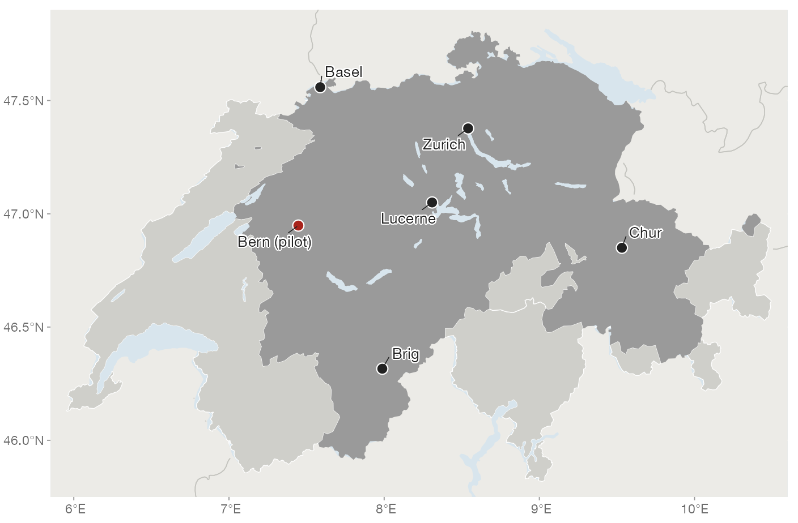

Projects
Research
Projects
Four projects I currently lead or co-lead. Earlier projects are listed under Grants.
SNSF and AHRC · from 2026
CURLEW: Census of Urban and Rural Language in England and Wales
The first major survey of English dialects in England and Wales in more than 75 years.

The Survey of English Dialects recorded how people spoke in the 1950s and 1960s. CURLEW is its successor: following the model of the Swiss Dialäktatlas, we record speakers of all ages and backgrounds, urban and rural, to show how English is spoken across England and Wales today, which changes are under way, and what drives them.
Groundwork: the English Dialects App
Funded by
- Funding
- SNSF and Arts and Humanities Research Council (AHRC), CHF 2.5 million
- Start
- 2026
- Investigators
- Dave Britain (Bern)
Paul Foulkes (York)
Adrian Leemann (Bern)
David Willis (Oxford) - Website
- curlew.info
- Contact
- curlew@unibe.ch
SNSF Eccellenza · atlas published 2025
Dialäktatlas: Swiss German from 1950 to today
Do people in German-speaking Switzerland still speak like their grandparents?

Seventy years after the Sprachatlas der deutschen Schweiz, we went back: with fieldwork, smartphone apps and video calls, we recorded more than 1,000 people, from Basel to Bosco/Gurin and from Salgesch to Diepoldsau. The atlas shows 166 features in over 500 maps and is free to download (PDF, CC BY-NC-ND).
Selected publications
Funded by
- Funding
- SNSF Eccellenza Professorial Fellowship, CHF 1.62 million
- Atlas
- Leemann, Steiner, Studerus, Oberholzer, Jeszenszky, Tomaschek & Kistler (2025). Dialäktatlas – 1950 bis heute. vdf Hochschulverlag.
- Website
- dialektatlas.ch
SNSF · with Erez Levon
Sound Effects: tracing the origins of social meaning in phonetic variation
German does not sound the same everywhere, and it is not judged the same way everywhere either.

Perception experiments in Switzerland, Germany and Austria, combining sociolinguistics and social psychology, show which regional features of pronunciation carry social meaning and where it comes from. This tells us which features communities are likely to keep, change or abandon.
Selected publications
Funded by
- Funding
- SNSF, CHF 1,048,704. Grant title: Sequels of Sounds. Towards a Modeling of Sociolinguistic Sound Aesthetics
- Awarded
- 2024
- Co-PIs
- Adrian Leemann
Erez Levon - Team
- Tillmann Pistor (postdoc)
Elijah King (PhD)
Gina Schaffer (PhD)
Liliane Schenk (research assistant) - Website
- soundeffects.info
SNSF Agora · 2026 to 2028
LIFT: Linguistic Inquiry for Future Thinkers
The Dialäktatlas goes to school.

LIFT turns the Dialäktatlas into a week-long school project: guided by short videos, secondary school students formulate a research question, collect and analyze their own data, and present their findings. Piloted in Bern, then in Zurich, Basel, Lucerne, Brig and Chur; all materials openly licensed.
Funded by
- Funding
- SNSF Agora, CHF 199,502
- Duration
- 24 months, from 2026
- Team
- Adrian Leemann (PI)
Simon Kistler (operative lead)
Markus Beutler (Gymnasium Kirchenfeld)
Matthias Dömötör (documentary filmmaker)